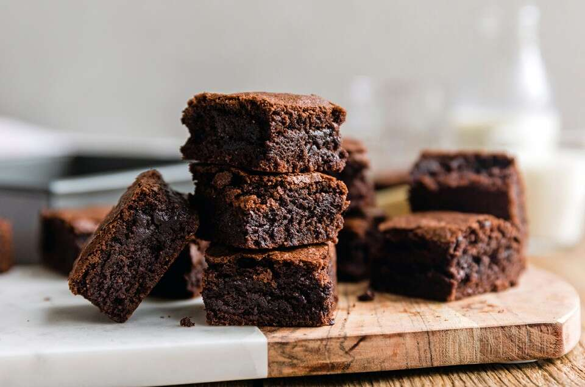

How to Make Deliciously Fudgy Dark Chocolate Brownies
Dark Chocolate Brownies

Description
These dark chocolate brownies are incredibly moist and fudgy, and are the perfect complement for a glass of milk or a scoop of vanilla ice cream.
Ingredients
- 3/4 cup cocoa powder
- 1 cup unbleached All-Purpose Flour
- 1 cup sugar
- 3 eggs
- 1/2 tsp salt
- 1/4 tsp baking powder
- 3 tbsp water (or coffee for a stronger chocolate flavor)
- 1 cup chocolate chips (optional)
- 1 cup chopped walnuts
- 1/2 cup vegetable oil
Steps
- First, grease an 8" x 8" or 9" by 9" pan and preheat the oven to 350 degrees Fahrenheit
- Combine the cocoa powder, flour, sugar, salt, and baking powder in a large mixing bowl.
- Next, add the vegetable oil, eggs, and water/coffee. Mix until no clumps remain.
- If desired, fold in chocolate chips and/or walnuts
- Pour batter into greased pan and bake in preheated oven for about 35 minutes if baking in the 8x8 pan, and between 40 and 45 if baking in the 9x9 pan. Let them cool thoroughly before cutting.